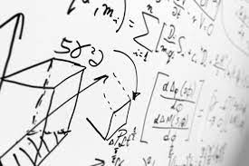

La física nos ayuda en los accidentes o colisiones para saber la velocidad, la distancia de frenado, el tiempo de frenado, la fuerza, la aceleración que llevaba el automóvil en el momento del impacto. Esto es para tener los datos sobre el suceso y poder registrarlo. Con esas fórmulas que utilizamos para sacar todos esos resultados nos ayuda a prevenir los mismos, pero a la vez saber todas las precauciones que debemos tomar para no correr los riesgos de un accidente y/o colisión del grado que Allan sido. Un accidente de tránsito es un suceso que ocurre generalmente cuando un vehículo colisiona contra uno o más sectores de la obstrucción estacionada.
Formulas utilizadas:
V=d/t
D=v2/2(g) g=gravedad(9.81)
T=vf-v0/a a=distancia de frenado
F=m*a A=9.81(gravedad)
